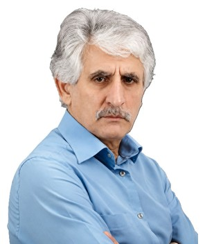

Profile
Saleh Sultansoy is a professor at TOBB University of Economics and Technology in Ankara, where he has worked since 2007, and a leading researcher at the Institute of Physics of the Azerbaijan National Academy of Sciences since 1993. He studied at Azerbaijan State University from 1969 to 1974 and received a doctorate in 1985 at the Institute of High Energy Physics in Serpukhov. His stated fields are high-energy physics, particle accelerators and their applications, science and technology strategy, and the history of science. Published more than 800 scientific works, of which 632 are in Science Citation Index journals.
Work experience
TOBB University of Economics and Technology, Ankara, Turkey
2007–presentProfessor
Institute of Physics, Azerbaijan National Academy of Sciences, Baku, Azerbaijan
1993–presentLeading researcher
Gazi University, Ankara, Turkey
2000–2006Contract professor
- Department of Physics
DESY, Hamburg, Germany
1999–2000Invited scientist, professor
Ankara University, Ankara, Turkey
1993–1999Contract professor
- Department of Physics
Institute of Physics, Azerbaijan Academy of Sciences, Baku
1989–1993Senior researcher
Institute of Physics, Azerbaijan Academy of Sciences, Baku
1987–1989Researcher
Institute of Physics, Azerbaijan Academy of Sciences, Baku
1982–1987Junior researcher
Institute of High Energy Physics, Serpukhov, Russia. Concurrent with the Baku post
1979–1989Institute of Physics, Azerbaijan Academy of Sciences, Baku
1974–1982Senior laboratory assistant
Education
PhD
1985Institute of High Energy Physics, Serpukhov, Russia
Bachelor’s and master’s degrees (lisans and yüksek lisans)
1969–1974Azerbaijan State University, Baku, Azerbaijan
Grants & projects
- 1997–2000 — Particle accelerators: what should be done in Turkey. Code DPT-97K-120420 — State Planning Organization. Ankara and Gazi universities — Project leader, 1997–1999; adviser, 1999–2000
- 2002–2005 — General design of the Turkic Accelerator Complex. Code DPT-2002K-120250 — State Planning Organization. Gazi and Ankara universities — Project leader
- 2006–2016 — Technical design and test laboratories of the Turkic Accelerator Center. Code DPT-2006K-120470 — State Planning Organization. Coordinated by Ankara University, 11 universities — Member of the international scientific advisory board
- 1997–present — ATLAS, LHC — CERN, Geneva, Switzerland
- 1999–2001 — THERA — DESY, Hamburg, Germany
- 1999–2001 — TESLA Photon Collider — DESY, Hamburg, Germany
- 2003–2010 — CLIC Test Facility — CERN, Geneva, Switzerland
- 2004–2008 — Electron-proton and electron-nucleus colliders based on CLIC and the LHC — DPT-TAEK — Project leader
- 2004–2008 — Photon-proton and photon-nucleus colliders based on CLIC and the LHC — DPT-TAEK
- 2004–2008 — Free-electron laser–nucleus collider based on CLIC and the LHC — DPT-TAEK
- 2004–2008 — Effect of beam dynamics at the CLIC collider on physics research — DPT-TAEK
- 2008–2011 — ep, γp, eA, and γA colliders based on a linac and the LHC — DPT-TAEK — Project leader
- 2009–present — LHeC — CERN, Geneva, Switzerland
- 2015–2018 — Search for a possible new level of the structure of matter at TeV colliders. Code 114F337 — TÜBİTAK
- 2015–present — FCC — CERN, Geneva, Switzerland
Research metrics
- Scientific publications, of which 632 in Science Citation Index journals — More than 800 — Self-reported
- Publications / citations / h-index — 652 / 18,298 / 54 — Web of Science — 9 May 2017
- Publications / citations / h-index — 806 / 72,168 / 124 — INSPIRE HEP — 9 May 2017
Publications
Peer-reviewed journal articles
1. Sultansoy, S. Regional project for elementary particle physics: linac-ring type c-τ factory. Turkish Journal of Physics, 1993, 17, 591.